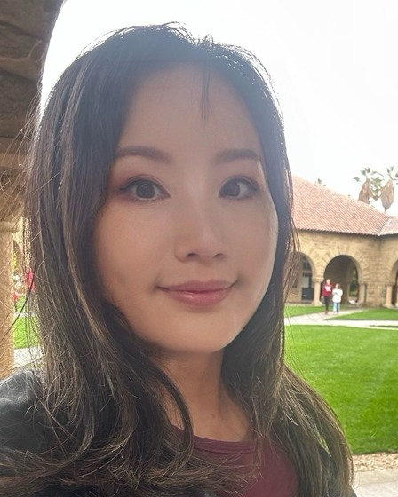

Ben Krause
Cofounder & CEO
Ben has spent over a decade researching language models, with work spanning neural architectures, adaptation, and controllable generation. He is focused on making capable local AI run well on accessible hardware.
ABOUT LLMS FOR ALL
Our goal is to make capable AI practical on everyday hardware, with models and applications designed to work together.
Cofounder & CEO
Ben has spent over a decade researching language models, with work spanning neural architectures, adaptation, and controllable generation. He is focused on making capable local AI run well on accessible hardware.

Cofounder
Lucia founded Psyfy, an AI self-care app with 30,000 users. She brings combined experience across AI, product development, design, user experience, and marketing to LLMs For All.
Ben and Lucia both earned their PhDs in Informatics from the University of Edinburgh.